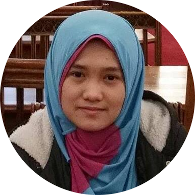

|  | Nur FatinSoftware Engineer Specialize in AI & RPA. I üíö reading and horse riding Send Message |
| 2021 | University of Michigan, USA |
Course: Programming for Everybody (Getting Started with Python) This online course explored the basics of programming computers using Python 3 |
| 2021 | Microsoft |
Course: Introduction to Data Science By using Microsoft Excel, this course shows how to apply basic techniques, such as data pre-processing and cleaning, data visualization and descriptive statistics, to data in order to understand it. |
| 2014-2017 | The University of Manchester, UK |
BA (Econ) (Hons) Business Studies and Economics The Manchester Leadership Award |
| 2012-2014 | UEM Foundation College, Malaysia |
A level: Accounting (A), Economics (B), Mathematics (B) |
| 2007-2011 | Slim River Islamic Secondary School. Malaysia |
SPM: 11A (9A+, 2A) including Arabic, Mathematics and English. |
| 2011 | London Chamber of Commerce and Industry(LCCI) |
Level 2 Certificate in Book-keeping and Accounts I learnt how to record in detail of the financial transactions of a business, maintaining records using double entry bookkeeping and ensuring that all monetary transactions are recorded accurately. |
| Dates | Works | Descriptions |
|---|---|---|
| 2018-2019 | Sales Executive at Truecapital Asia Sdn Bhd | ▪Learnt about construction industry and receivable financing |
| 2018-2019 | Purchasing Executive at BP Healthcare | ▪Negotiated with suppliers from the USA and India to increase payment term to 90 days. ▪Saved company cost and increase customer satisfaction by asking suppliers to change hearing aid repair location from USA factory to their lab in India ▪Initiated and led a construction project to improve staff facilities at the workplace. ▪Collaborating with several departments to ensure medical machines in the outlets are in good condition. ▪Convinced and borrowed stock from the supplier when the stock finished unexpectedly for operation to run smoothly. ▪Identified new feature in stock management system that speed up the team task in managing the stock. |
| 2018 | Digital Marketing Executive at GTI Media Sdn Bhd | ▪Increased product awareness via digital marketing tools, social media and email marketing campaign ▪Using google analytic and social media insight to generate statistic for company’s clients ▪Contributed in the development of marketing strategies using the knowledge of the latest trend in digital marketing |
| Python Programming | ⭐⭐⭐⭐⭐ | Email Marketing | ⭐⭐⭐⭐⭐ | SEO | ⭐⭐⭐⭐ |
| Shopify | ⭐⭐⭐⭐⭐ | Accounting | ⭐⭐⭐⭐⭐ | Sales | ⭐⭐⭐ |
| Google Analytic | ⭐⭐⭐⭐⭐ | Procurement | ⭐⭐⭐⭐ | Data Science | ⭐⭐ |